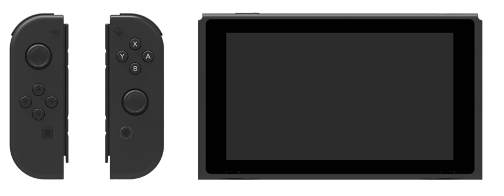

The NX is a console gaming device you can take outside. It combines the power of a console that offers solid and substantive gameplay with the flexibility of a handheld system that allows you to enjoy games wherever you can take them.
NX combines the advanced performance of a console with a size and weight that makes it easy to take anywhere, similar to a handheld system. With its high resolution, large format LCD screen, NX offers a rich gaming experience, even when outside. NX also offers the same number of buttons as previous platforms. Even though it has a large LCD screen, the handheld system is light enough (at an estimated 402.5 g) and thin enough (at an estimated 13.94 mm) to be taken anywhere. When the NX is being used as a console, output to the TV is made via the NX dock that comes bundled with the system. Switching between TV mode and handheld mode is as simple as attaching and detaching the system to and from the dock. The same game can be played anywhere.
The NX comes with controllers called JOY-CON. There are independent left and right controllers. Holding the JOY-CON controllers in different ways and making different uses of the built-in sensors and features opens up a variety of new ways of gameplay.

CONFIDENTIAL